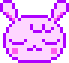
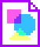
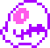
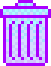
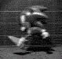
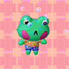
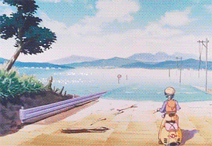
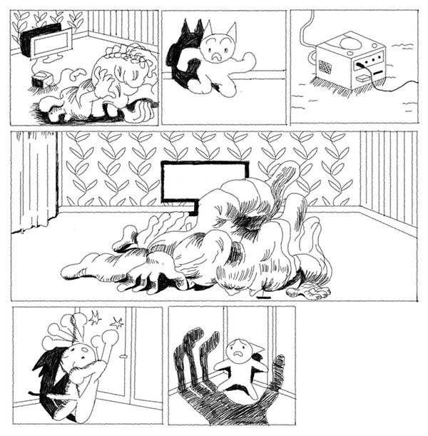
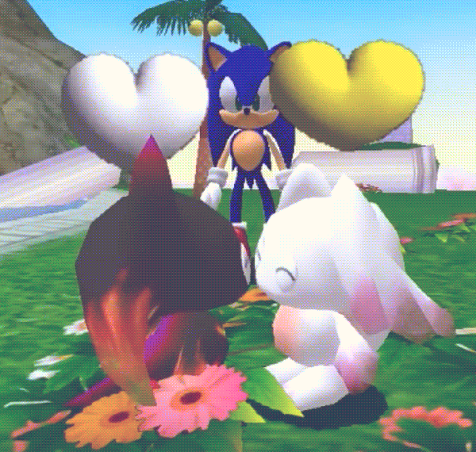

ドリーム.exe

美学.gif

ファミコン.exe

ごみ箱
★ ドリーム
I've been scrolling the internet and stumbled upon many disturbing videos with a lot of violence/gore/rape, but all featuring Knuckles the echidna. I got surprised by such a strange content-spreading tendency and decided to make a little investigation to find out where they came from. It appeared that such videos are called the KnucklesGate and are all aimed at creepy perverted weirdos + created by the same groups of people in order to connect with each other. However, regular people spread these videos just for fun thinking that Knuckles makes them look funny and post-ironic.
I had a very cool dream in my childhood, but it's not transmitted verbally since it's very visual - it's easy to be recreated IRL though. To do so you would need to launch Sonic 3D blast on a very decrepit black and white TV set using the antenna cable so that the whole screen is in white noise, and then turn off the light and play it like that.

When I was a supersmall post-fetus, I met a cool Squirtle with those Kamina glasses, and we've been hanging out for a while. He was such a nice company that I started thinking it's MY pokemon. But then I encountered some cool bikers and Squirtle went to them. I understood that it was stupid of me to think this way - that was obviously not MY pokemon, and there was nothing I could do about it but to deal with it (I felt miserable though).
It was a strange day. I was walking outside to find the bubblegum, which has been my favourite since I was a child. I guess I was sitting on the swings when I met some special kitty-girl and we started walking and talking a lot, and I suddenly realised that I'm in her house and we seem to live together. She was so adorable, I was sure I have a lot of affection towards her. Seems like I kept staying in her house for days or even weeks, and then I got thrown to the future to the exact moment when she insists on me quitting her life (I thought we'd been living happily together...). From the side perspective, I saw that I'm an adult male cat who has a passion for mixing drugs, and it seems to be the issue. But at the same time, I felt that things could change. Despite losing control over the cat which I appeared to be, I got the power to restart and relive the moment of life, but I could only get back to the moment she insists on me leaving, so I kept leaving again and again until I disappeared completely...
This was not the first time we were walking together, but this day I remember the most. We walked past some village school, which consisted of just one, albeit very large, class. It was a strange place. And then we passed the cableway that leads to the park. There was a bunch of stuffed toys lying under the cableway. Someone told us that people have a tradition of throwing a toy from the window for good luck when getting into the cabin. I looked at all that mess. It was nice, but some toys had their heads lying separately from the body...
I've been chilling in the village house when suddenly someone rang the doorbell. I opened the door and saw two men — the one held a bunch of little toads, another one handed me a little toad covered in a handkerchief saying, "Do you want a toad?" I said, "Oh yes, a toad, please!" and took a toad. The men left, and I went into the house, put a toad on a table and proceeded to admire the toad supremacy.

I played original Polybius and clearly heard the song "f3nrirs - violent", so I considered it to be the original soundtrack. I thought it's cool that I secretly know it and nobody does.
The city was flooded with water, and where there used to be houses, now a huge sea. A cozy, huggable sea... And many bridges...

I appeared in the bathroom with some person I know. They were taking a shower while I was brushing my teeth. I blushed a lot. I asked if I could wash them. They said, "Ok fine," neutrally. So I started to wash their hair, being very careful. I wondered if they feel alright. They said that they feel inappropriate. I apologized.
I met a group of girls on the street, we had backpacks, and I knew we are going on an adventure. I wanted to get acquainted with one of them for a long time, and I finally did. She pointed at the house covered with paintings that we were passing by. It appeared that it was painted by her — I was shocked at such a coincidence. She said she's very upset so far because she drew one complicated request recently, and the requester left her without paying any money. We went to some ruins, and our way became too complicated. We needed to jump down from heights, and I was afraid to jump because I could break my legs, but the girls were laughing at me because they could jump easily. We've been traveling for long, and for some reason I thought that we are on an adventure to find and kill a dangerous witch monster that eats people's heads like in Madoka Magica. The monster never appeared though, so I invited the girls to hang out at my place not to be disappointed about the wasted time. While we were at my place, I started talking with one specific girl again. She was a loli obsessed with robots and random technological stuff. I showed her my sketchbook — it was filled with weird and kinky drawings of cute mutilated schoolgirls. I didn't remember drawing so much stuff, but I was sure these were mine. Then she opened her backpack and took some weird-looking robot-like machine out of it. She started touching me with it, and that made me feel super-embarrassed, so I started hiding from her. I covered myself with a blanket. Some other girl passed by and asked what we were doing. I was too embarrassed to answer.
I tended to walk through the markets in search of different cool things, but I always lacked money. When I got my first job, the perspective of it all changed significantly. I finally got a feeling that I could afford anything. That time I went to find another stall filled with retro gaming consoles, and I did, I was in a perfect mood to buy anything my heart desires. But there wasn't much... Most of the consoles that they were selling were broken. I asked the sellers if they had Gameboy Original. They said that they only had Gameboy color, but it was broken, although they had a lot of working Gamecubes for sale. I looked around — a lot of Gamecubes indeed. I started thinking about something of my own, then I turned around and left without buying anything.

I was visiting a wicked girl. She mentioned several times that there was a scary room in her house, and I was hiding and asking her not to take me there... We were sitting together, and then I broke something of her things by accident. She got very mad at me. I never went to a scary room.
We were a cool gang of superheroes, and our lair was similar to what the ninja turtles had. I don’t remember exactly who all these people were. One of them resembled Jake in behavior, and generally, he could stretch his arms. One day he brought a decaying corpse of someone unknown, put it on the couch, and convinced us that he knew what he was doing. The corpse was lying motionlessly on the couch for a while. Later, it began to move a little and gradually came to life and started looking fresher. The next day, it became a woman who got out of bed and went somewhere. We followed her around the city — we wondered where she would lead us, so we ended up in a large shopping center. We wandered there with her examining various things; the place was very crowded. Suddenly a guard appeared out of nowhere, and the woman rushed to run through the crowds. The guard yelled something, then ran after her and shot her. It was terrifying. She crumbled and turned into nothing by the time we approached her. We realized that all this time this corpse was sending us a vision of how it died...
The videogame portrays a small fragment of a cozy forest, and you, the player, play the role of a bunny in the first person or 'the first bunny' so to say. One more bunny, your loyal fellow, accompanies you on your adventure. There are a lot of flowers and berries all around, but the game itself is aimless, and all you can do is walk around and admire the cozy plants. Well, in fact, if you desire to find the meaning of existence in this forest, at some point the searching will lead you to the rat, that will say that you would find a meaning behind the door, which is hidden nearby — the rat would lead you there if you need. If you go through this door, you'll get covered with dense darkness. If you decide to go further, the long dark tunnel will end up with a chasm. You will fall and fall for a very long time deep down underground. As a result, you will appear in a dark basement. There would be bookshelves and all sorts of things. Everything there looks extremely realistic. A person looking like a soldier would come into the basement at hearing you fall there. At this point, you can try to hide behind one of the closets or elsewhere, but he will find you anyway. It's important to mention that both you and your bunny companion are anthropomorphic and of the size of a little kid. As soon as the man gets you, your companion would pounce on this man trying to attack him, however, this man has a knife so he stubs the bunny right into his eye. The bunny screams in pain and at this point, I got some kind of memory blackout. I only remember that both you and your companion are taken to some other place and in a while, you both appear sitting at the table, and there are several people sitting around you. They say, "once you have come to our world, now you have to live by our rules." Your partner has an eye patch, and you realize that now he will remain one-eyed for the rest of his bunny life. You ask people, "how to live by your rules?" One of them says, “ohhhh, you need to learn a lot of things, you have a long way to go. First, you need to go to school. It's this way.” They point to the hatch on the floor. You two open it and begin to go down very deep, much farther underground.
Today I had a dream where I sent two mating chaos to a friend, saying "us"...

We met in a video game, which made us fight each other; otherwise, we wouldn't have been able to proceed. He beat me up hard, and I restarted the game by the time I was almost out of HP. I didn't really want to fight him, so I went on side quests and was talking to random npc's, trying to avoid him as much as possible. But eventually we encountered each other again. He was wearing a helmet and seemed even more prepared this time. I suddenly realised that he might have restarted before as I did, but I have a memory loss each time he does. I asked him how many times he had fought me. He said, "It's the 10th time now". We started a fight, and I tried to do my best this time. I hit him with a stick a few times, and it seems like he got paralysed. He fell, and I pressed him down to the ground, punching his head several times till his face was bleeding all over. It's just a video game after all.
美学.GIF
ファミコン
申し訳ありませんが、お使いのブラウザは<x-nes>をサポートしていません。
ごみ箱
7061737377
6f7264.txt
6f7264.txt